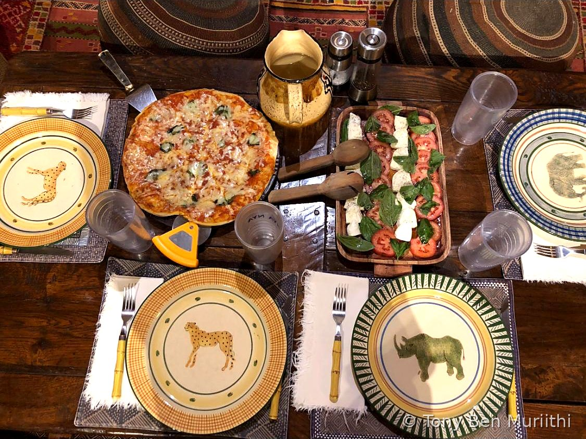
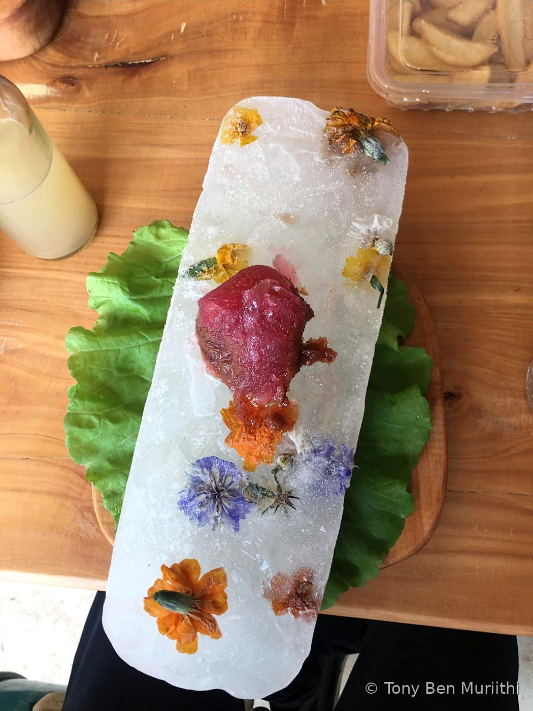
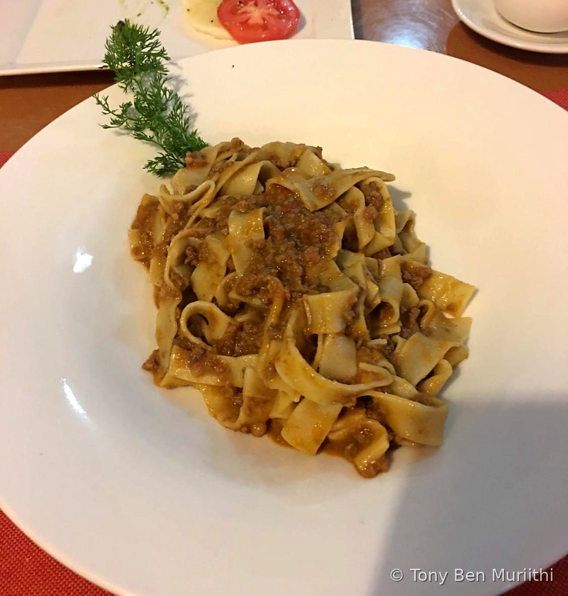
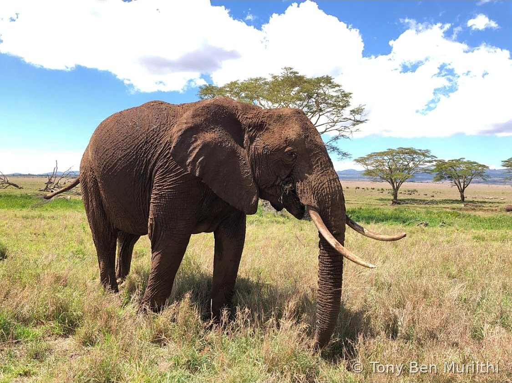
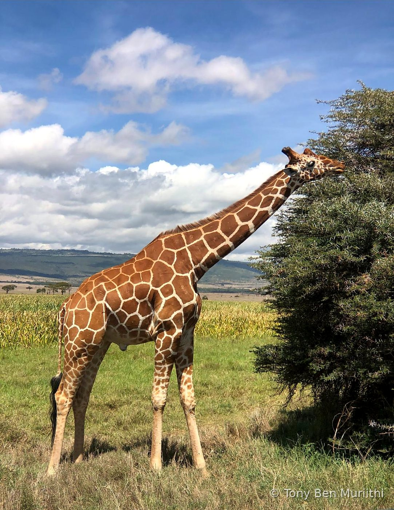
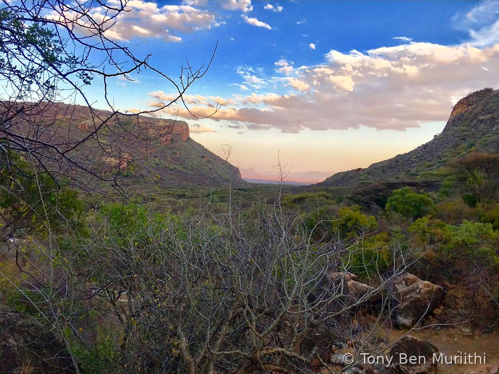

Tony Ben Muriithi
Applying for Events & Social Media Manager. A hospitality-minded developer with a plan for Jikoni's next 60 days, built from what is already on your calendar.
WhatsApp me EmailWhat I bring
Where Jikoni is today
From public pages, in my own words. Happy to be corrected.
The energy is already there. My focus would be to turn attention into bookings through steadier short video, a Facebook and LinkedIn presence, and one clear path from post to ticket.
The 60-day plan at a glance
Assumes a start on Monday 12 October 2026, and I would start promoting earlier if I can. The full plan is attached to my application.
- Days 1–14 · 12–25 Oct
Caribbean Kitchen, The Art of Baking and the Sunday Meal Prep Club. Weekly content calendar, TikTok up to 3 posts a week, Facebook Page live, and a countdown for each event. - Days 15–30 · 26 Oct–10 Nov
Intermediate Cooking Course diary. Daily Day 1 to Day 5 stories and Reels, October recap, guest photos and feedback, and the November calendar. - Days 31–45 · 11–25 Nov
Grow and convert. Chef and team stories, mini recipe videos, LinkedIn posts for hospitality training and private chefs, and a simple enquiry tracker. The Meal Prep Club returns on the last Sunday (29 Nov, to be confirmed). - Days 46–60 · 26 Nov–10 Dec
Festive push. Gift vouchers and end-of-year bookings, private and corporate events, and a 60-day results report.
What is on in October
All at Jikoni Studio, Heltz House, Ngara, from your October calendar and Mookh.
Each event gets a countdown before, live moments during, and a recap after. Private events stay private unless the client agrees.
Sample content ideas
How I would run bookings behind the scenes
A simple sheet-and-message workflow the whole team can use. I can prototype it for you.
Through my lens
Tables, plates and places I have photographed. The eye for detail is the same one I would bring to Jikoni's events and content.






Background
Ololo Safari Lodge · Driver Guide (2021–2023)
Royal African Safaris · IT Technician, with Cultiva Farm store and restaurant support (2018–2021)
Moringa School · Software Development (2020)
Dennis Travel · Driver (2016–2018)
St John Ambulance · First aid training
Let's talk
I can commit full-time and start as soon as you need me.
WhatsApp +254 702 889 103 bentony424@gmail.com